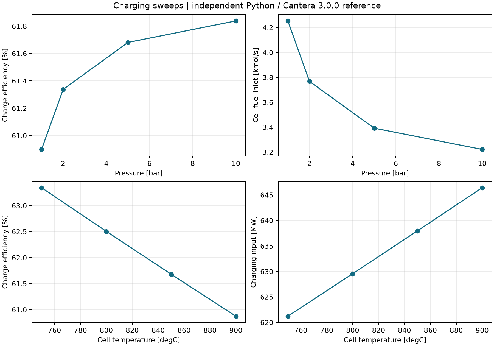
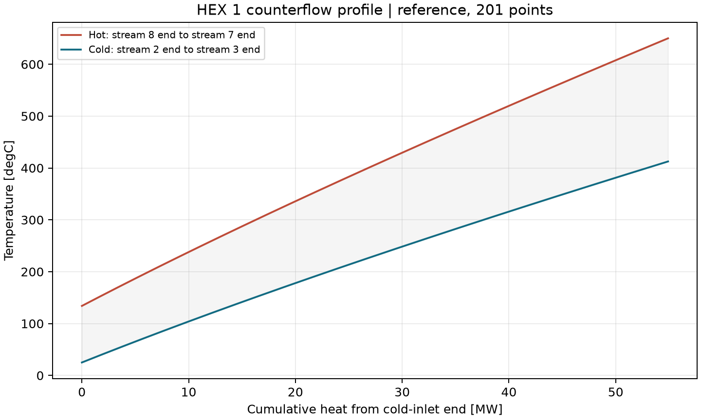

검증 갱신일: 2026-11-18 (한국 시간). 원본 모델 revision: fb28621885af0df18ac6d20412ad4db788992efe.
첨부 과제 PDF와 코드의 charging 범위를 대조했습니다.
검토한 식·경계조건은 과제의 정상상태 충전 공정과 일치합니다. 독립 Cantera 계산값도 README의 반올림 참고 수치와 일치합니다.
따라서 기존 충전 모델을 버리기보다 입력 검증과 원시 출력의 재검산을 보강하는 방향을 택했습니다.
modes/charging_mode.m은 기존 모델의 물리식/인터페이스를 유지합니다. 기존 코드 기여와 추가한 검증 코드는 지침서의 연결 설명에 구분했습니다.
이 판단은 MATLAB에서 충전 코드를 실행해 성공했다는 뜻이나, 최적 공정/실제 제작 설계가 완료됐다는 뜻은 아닙니다.
| 구분 | 결과 |
|---|---|
| PDF와 원본 코드 검토 | 완료: 조성, 번호, 전압, 단위, 회수 조건, 경계, 효율 |
| Python 런타임 | Python 3.11.18, Cantera 3.0.0, NumPy 1.26.4 |
| 기준+필수 압력/온도 | 9개 케이스, 각 46개 수치 검사 통과 |
| Python 회귀·오류 주입 | 8개 test method 통과(여러 subtest 포함) |
| MATLAB 소스 정적 검사 | MISS_HIT 0.9.44, 6개 .m 파일, 오류/경고 없음 |
| 그림 | pressure/cell-temperature 스윕 및 HEX 내부 T–Q PNG 생성·열람 확인 |
| MATLAB/Cantera toolbox 실행 | 미실행: 이 환경에 MATLAB 없음 |
| MATLAB 출력과 Python 비교 | 미실행: MATLAB raw.json을 만든 뒤 실행 필요 |
| 통합 방식 | 기존 charging 함수에 입력 검사 추가, main_charging과 검산·독립 계산·문서 추가 |
JSON 대조 CLI는 Python 기준 JSON으로 입출력 경로를 시험했습니다. 이것을 MATLAB 대조 성공으로 계산하지 않았습니다. 원본 README도 Python 참고값이라고 밝히고 있으므로, README와의 일치가 MATLAB 실행을 대신하지 않습니다. 정적 검사는 문법/일부 코드 문제를 확인하며 Cantera API의 런타임 동작을 보증하지 않습니다.
| 케이스 | Pin [MW] | ηch [%] | n4 [kmol/s] | Vch [V] |
|---|---|---|---|---|
| 기준 5 bar, 850°C | 637.9587 | 61.6811 | 3.3923 | 1.14918 |
| 1 bar | 646.1573 | 60.8985 | 4.2525 | 1.12437 |
| 2 bar | 641.5321 | 61.3375 | 3.7672 | 1.13368 |
| 5 bar | 637.9587 | 61.6811 | 3.3923 | 1.14918 |
| 10 bar | 636.3338 | 61.8386 | 3.2218 | 1.16258 |
| 셀 750°C | 621.2116 | 63.3440 | 3.3923 | 1.18604 |
| 셀 800°C | 629.5531 | 62.5047 | 3.3923 | 1.16758 |
| 셀 850°C | 637.9587 | 61.6811 | 3.3923 | 1.14918 |
| 셀 900°C | 646.4245 | 60.8733 | 3.3923 | 1.13082 |
9개 중 기준·P5·T850은 의도적으로 같은 조건을 별도 저장했습니다. 서로 다른 조건은 총 7개입니다. 각 압력 스윕은 Tcell=850°C, 각 셀 온도 스윕은 P=5 bar이며 TB,ch=650°C를 유지합니다.
기준 전체 에너지 잔차: 약 −1.95×10⁻⁵ W. 9개 케이스 전체 에너지 잔차 절댓값 최대 약 4.23×10⁻⁵ W. 기준 HEX 엔트로피 생성률: 약 30.140 kW/K ≥ 0. 최소 온도차: 109.049 K. Cantera의 25°C 저장 반응 엔탈피는 약 393.507750 MW, 효율 계산의 지정 LHV 유량은 393.500000 MW입니다. 그 차이 약 7.75 kW를 수지 오류나 추가 손실로 분류하면 안 됩니다.
main_charging을 실행.results/charging_review/summary.csv와 각 케이스의 검사표를 확인.raw.json을 Python --compare에 넣어 대조.main으로 방전·왕복 효율을 포함한 통합 결과 재생성.한 케이스라도 실패하면 해당 independent_checks.csv/comparison.csv의 항목부터 확인합니다.
수지 검사 통과 후에도 cell current density, reaction kinetics, HEX area와 같은 실제 장치 정보는 별도 설계가 필요합니다.
Python 시험 로그, MATLAB 정적 검사 로그, 9개 케이스 요약, 기준 수지 검사를 함께 저장했습니다. 인터랙티브 학습의 22개 계산과 6개 오류 시나리오는 학습 검증 기록에서 확인합니다.

